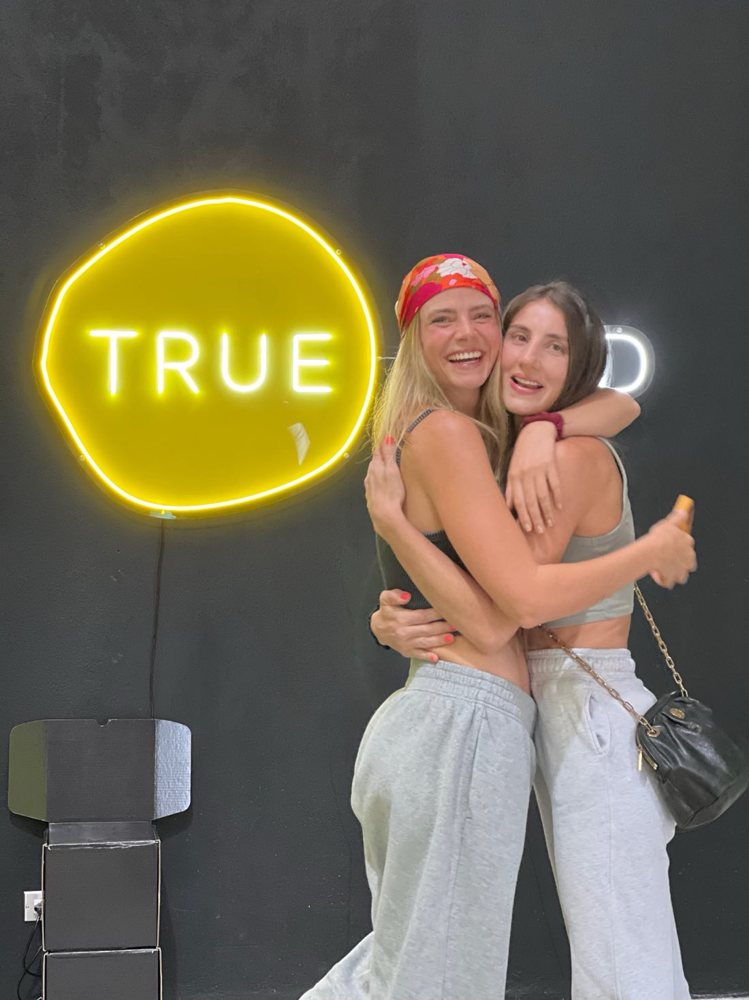

Our story
We are Lore and Andre, two friends brought together by the love of delicious food and a healthy lifestyle. Our adventure began in Costa Rica, where we created True Food together.
It all started with Santi, Andre’s youngest son, who was diagnosed with multiple food allergies. That challenge opened our eyes to the powerful connection between food and health. It frightened us, yes, but it also pushed us to take the leap towards a healthier lifestyle — one we had always wanted but feared for the “sacrifices” it meant.
Today, True Food is more than a brand. It is a community of people who, like us, believe you can eat deliciously, healthily and without gluten.
- Founded by women
- Made in Costa Rica